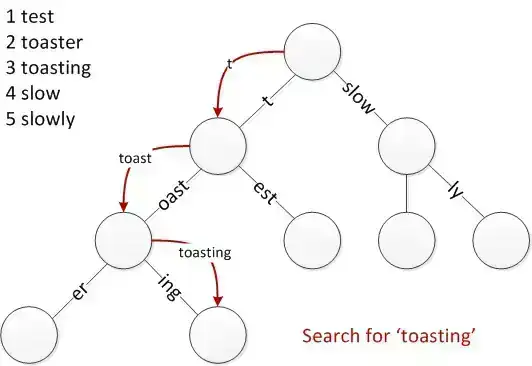

What each proposes
String theory replaces point particles with one-dimensional strings. Its vibrational modes give the known particles, and one of them is a graviton — which is why it is a theory of gravity at all. It needs extra dimensions (ten in the common versions, eleven in M-theory) and supersymmetry to be consistent.
Maps, diagrams and images


Loop quantum gravity keeps spacetime itself as the thing to quantise. Space becomes a discrete network of spin labels — quantised area and volume — and the theory is background-independent by construction, which string theory is often criticised for not being.
Neither has been formulated completely. String theory has no non-perturbative definition outside special backgrounds; loop quantum gravity has struggled to recover ordinary smooth spacetime and to couple to matter convincingly.
The scoreboard
String theory's assets: a graviton comes for free; it produced AdS/CFT, a conjectured duality that has been enormously useful in nuclear and condensed-matter physics even if it is not a theory of our world; and it is mathematically extraordinarily rich.
String theory's problems: the landscape of possible vacua is astronomically large, so the theory may not predict anything; supersymmetry has not appeared at the LHC; and the predicted extra dimensions, cosmic strings and heavy relics have not been seen.
Loop quantum gravity's assets: background independence, a concrete picture of quantum geometry, and applications to black-hole entropy and early-universe cosmology (loop quantum cosmology).
Loop quantum gravity's problems: recovering a smooth four-dimensional spacetime at low energy is not fully demonstrated, and the theory has no clear route to unification with the other forces.
Neither is established physics. Both are candidate frameworks, and both are taught as research programmes rather than results.
Popular books oversell both. 'Theory of everything' claims are premature in either direction, and the rhetoric on both sides has been ungenerous for decades.
The honest test is experiment. Any quantum-gravity effect is suppressed by the Planck energy, roughly 10¹⁹ GeV — far beyond any collider. Plausible tests are cosmological (primordial gravitational waves, black-hole echoes) and none has returned a signal.
The archive labels this a live debate because it is a real disagreement among physicists about which programme to pursue, not about whether the question is worth asking.
Why it is in the archive
Because 'quantum gravity' is a favourite of the fringe — used to justify everything from consciousness to free energy — while being an ordinary, unfinished research problem.
Related: the holographic principle, the firewall paradox.
Sources for this page
- Wikipedia, “String theory” — status, criticism, landscapeen.wikipedia.org
- Wikipedia, “Loop quantum gravity” — quantised geometry, open problemsen.wikipedia.org
- Vafa (2005), the swampland, arXiv:hep-th/0509212arxiv.org
- Wikipedia, “AdS/CFT correspondence” — the duality and its usesen.wikipedia.org
Open resources on this topic
- PapersOpen-access articles: DOAJ · PubMed Central · Internet Archive Scholar
- BooksPublic-domain and borrowable copies: Open Library · Project Gutenberg · Google Books · Internet Archive
Cite this page
Momin, S. (2026). Strings versus Loops. The Larger World Archive. https://drsamonline.github.io/LARGE_GLOBE/string-theory.htmlMomin, Sohil. “Strings versus Loops.” The Larger World Archive, 2026, https://drsamonline.github.io/LARGE_GLOBE/string-theory.html.Momin, Sohil. “Strings versus Loops.” The Larger World Archive, 2026. https://drsamonline.github.io/LARGE_GLOBE/string-theory.html.@misc{strings2026string,
author = {Momin, Sohil},
title = {Strings versus Loops},
year = {2026},
howpublished = {The Larger World Archive},
url = {https://drsamonline.github.io/LARGE_GLOBE/string-theory.html},
note = {Last reviewed 20 November 2026}
}Last reviewed 20 November 2026 · Corrections policy · this page is not peer reviewed